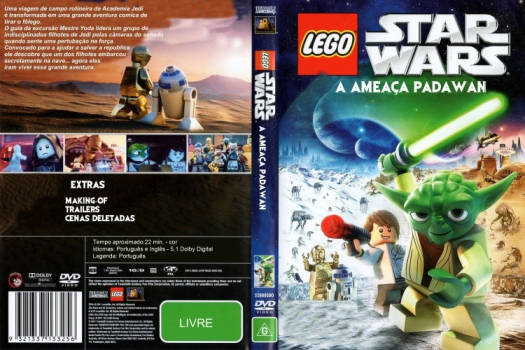

Outro Título:LEGO Star Wars: The Padawan Menace
País:Australia, 22 minutos
Idiomas falados:Inglês, Português
Gênero(s):Família, Animação, Sci-Fi
Diretor(s):David Scott
Escritor(es):Michael Price
Codec:MPEG-2 (DVD)
Número: 5782


Certificado:
Sinopse:
Um passeio de rotina da academia de Jedi é transformado em uma aventura divertidíssima em Lego Star Wars: A Ameaça Padawan. O mestre Yoda lidera um passeio de um grupo de jovens aprendizes Jedi barulhentos e não lá muito disciplinados em visita ao Senado quando sente uma pertubação da Força. Chamado para ajudar a salvar a República, ele descobre que um dos jovens aprendizes chamado Ian entrou clandestinamente na sua nave... E o jovem Ian adora uma aventura ! Enquanto isso, C-3PO e R2-D2 ficam tomando conta do agitado grupo e descobrem que essa é uma tarefa para a qual não foram feitos. Com o malvado Sith se preparando para criar confusão feia, cabe a Yoda e aos dróides assegurarem que os jovens aprendizes não sejam feitos em pedaços.
Elenco:


Tipo de mídia: DVD5,
Legendas: Português, Sem Legendas
Alugado: Não
Tela: Anamorphic Widescreen